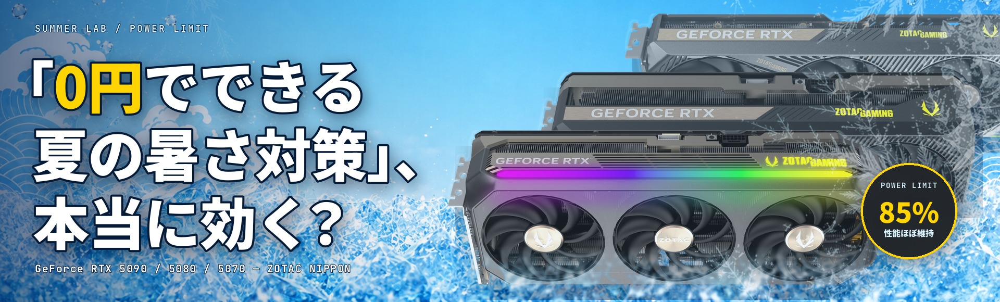
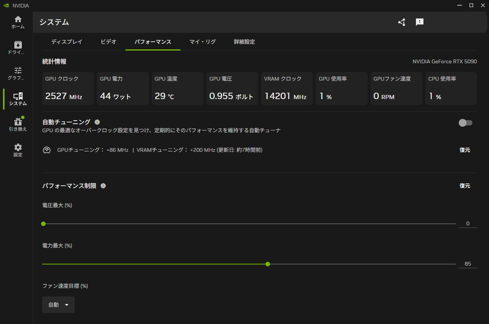
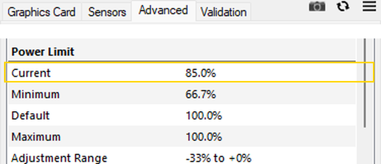
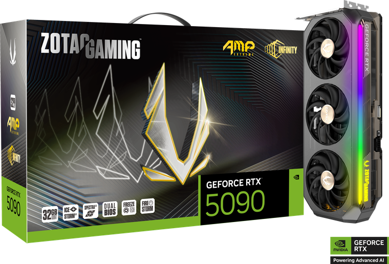
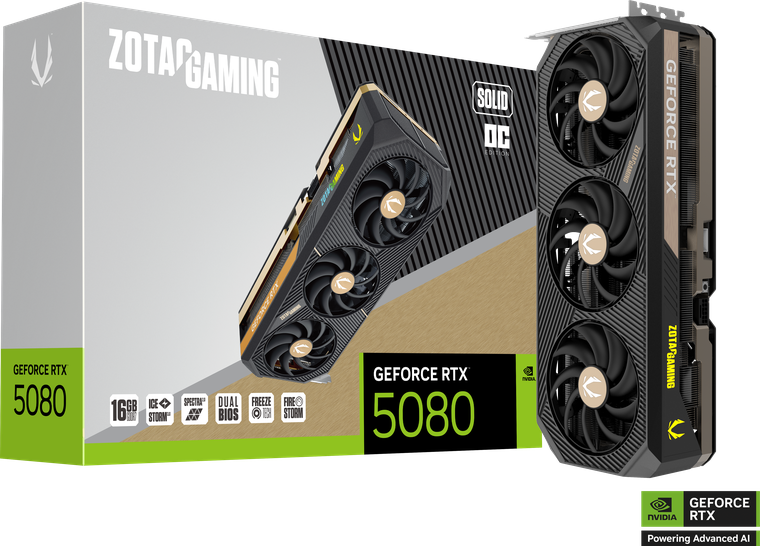
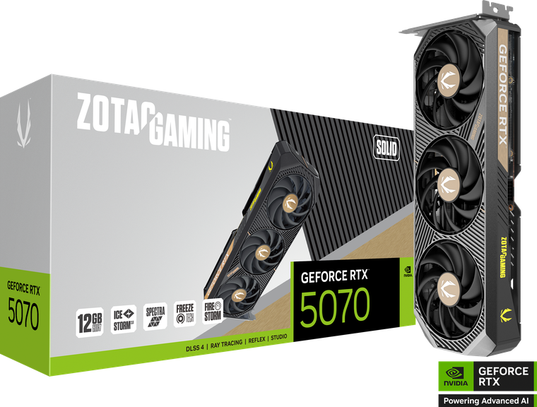

「0円でできる夏の暑さ対策 」、本当に効く？GeForce RTX 5090 / 5080 / 5070 — Power Limit 設定で消費電力・温度はどこまで下がり、性能はどこまで残るのか
連日の猛暑日。ゲーミングPCの発熱が部屋の暑さに直結する季節です。「エアコンをつけても室温が上がる」「ファンの音が気になる」——そんなときに追加費用ゼロで試せるのが、GPUのPower Limit（電力制限）調整です。ただし、性能が落ちてしまっては元も子もありません。実際どの程度なのか。ZOTAC GAMING GeForce RTX 5090 / 5080 / 5070 の3枚で、Power Limit を段階的に絞りながら 3DMark・Blender・Cinebench・画像生成AI（Stable Diffusion）を実測しました。

実測サマリー（3行）
- 推奨は「まず85%」。Steel Nomad の性能維持率は RTX 5090 92.9% / 5080 95.5% / 5070 96.7%。同じ85%で電力は-91W / -51W / -38W、最高温度も4〜6℃下がった。Blender・Cinebench のように電力上限まで使わない処理は低下ほぼ0%。
- もっと熱を抑えたい日は下限設定（67〜70%）。性能低下は9〜20%と目に見えるが、RTX 5090 は負荷時平均595W→398W（-197W）、GPU最高温度は3DMarkで9〜11℃・画像生成では最大13℃（78→65℃）下がる。ワットパフォーマンスは全カードで向上（+10〜31%）。
- 例外はAI画像生成。RTX 5090 の SDXL（標準設定）だけは85%でも性能が約24%低下した（3.04→3.98秒/枚。5080 / 5070 は85%ではほぼ無風）。画像生成を重視するなら、85%と100%をご自身の環境で見比べてから。
ご注意 — Power Limit の変更や自動チューニングは、NVIDIA 公式アプリの標準機能の範囲でもオーバークロックに類する設定変更にあたり、保証の扱いはメーカー・製品ごとに異なります。設定変更は自己責任でお願いします（詳細は §02）。
Power Limit 85% — 性能はほぼ残して、電力と熱だけ削れた
昨夏、RTX 5080 の Power Limit を80%まで絞ったところ、3DMark は約7%下がった一方、実ゲームの低下は0〜1.4%に収まりました。正直、ここまで性能が残るとは予想していませんでした。では RTX 5090 や 5070 でも同じことが言えるのか——今年はカードを3枚に増やし、「まず試すならどの設定か」まで実測で探ります。
先に結論です。GPUを使い切る 3DMark Steel Nomad で Power Limit を85%にすると：
| 85%設定（対100%） | 性能維持率 | 負荷時平均電力 | GPU最高温度 |
|---|---|---|---|
| RTX 5090 | 92.9% | 595W → 504W（-91W） | 71℃ → 67℃ |
| RTX 5080 | 95.5% | 355W → 304W（-51W） | 66℃ → 62℃ |
| RTX 5070 | 96.7% | 249W → 211W（-38W） | 71℃ → 65℃ |
性能の落ち幅より、電力と熱の下げ幅のほうが大きい。だから最初の一手は85%です。しかも電力上限まで使わない Blender や Cinebench は、この設定でも±1%前後＝実質差なしでした（§05）。もっと熱を削りたければ下限（67〜70%）という選択肢もあります（§04）。唯一の例外である画像生成AIについては §06 で正直に書きます。
Power Limit とは — スライダー1本で「電力の天井」を決める
NVIDIA GPU の Power Limit は、GPUが消費してよい電力の最大許容値を決めるパラメータです。GPUは温度・電圧・電力の余裕を見ながら動作クロック（Boost Clock）を自動調整しており、Power Limit を絞ると「電力の天井」が下がるぶん、高負荷時のクロックが少し落ちます。逆に言えば、電力が天井に届かない処理はほとんど影響を受けません。ここが今回の検証の最大のポイントです。
設定は NVIDIA App のスライダー1本、3分で完了
今回の設定には NVIDIA 公式アプリ「NVIDIA App」を使いました。ドライバーと一緒に導入される標準アプリで、追加インストールは不要です。
- NVIDIA App を開き、システム → パフォーマンス を表示
- 「パフォーマンス制限」内の 電力最大（%） スライダーを目的の%へ動かす（即時反映）
- 戻すときはスライダーを100%へ、または「復元」をクリック

ZOTAC のグラフィックスカードでは、チューニングツール「FireStorm」でも同様の調整が可能です。
設定できる範囲と、適用されているかの確認
Power Limit で下げられる範囲はカードごとに決まっています。無償ツール「GPU-Z」の Advanced タブ → Power Limit で確認できます。

この画面は設定が効いているかの確認にも使えます。黄色で囲った Current が現在の適用値で、上の画像は NVIDIA App で85%に設定した直後の状態です。ここが 100.0% のままなら、設定が反映されていません。
なお「自動チューニング」（§08）のトグルは逆に再起動後も維持されますので、両方の状態を確認してください。
検証に使った3枚のグラフィックスカード
いずれも ZOTAC GAMING のカードで、同一のテストベンチ（Ryzen 7 9800X3D / 32GB DDR5-6400）に差し替えながら計測しました。TGP（カードが使える電力の枠）が 600W / 360W / 250W と大きく異なる3枚を選んでいます。

型番: ZT-B50900B-10P
今回の3枚で唯一の600Wクラス。絞ったときの削減量が3枚で最も大きく、Steel Nomad 実行中の負荷時平均は最大-197W。夏の発熱対策としての効き目は最も大きい。一方、画像生成AIが85%でも影響を受けた唯一のカードでもある。設定可能範囲は Min 66.7%〜Max 100.0%。

型番: ZT-B50800J-10P
昨年の検証と同じ RTX 5080 クラス（モデルは AMP Extreme INFINITY から変更）。85%で性能95.5%を保ちつつ-51W、下限70%でも87.7%とバランスが良い。ComfyUI SDXL 標準は4条件すべて同値だった。設定可能範囲は Min 69.4%〜Max 111.1%。

型番: ZT-B50700D-10P
3枚で最も小さいTGP。絞っても性能がいちばん粘り（85%で96.7%、下限70%でも90.9%）、ワットパフォーマンスの改善率は最大の+31%。今回の個体では、85%＋自動チューニングで定格の98.6%まで戻った。
※ 掲載の仕様は本検証時点のものです。設定可能な Power Limit の範囲はカードごとに異なります（§02）。
3DMark — 最悪条件でも、85%なら93〜98%残る
3DMark のようなGPUを使い切るベンチマークは、常に電力上限に張り付いて動くため、Power Limit の影響がもっとも素直に出る「ワーストケース」です。3テストそれぞれについて、性能（上）と消費電力（下）を3GPU×4条件で対にしたグラフを用意しました。上のタブで切り替えられます。
3テストを通して読み取れることは3つ。第一に、85%設定の性能低下はどのGPU・どのテストでも約2〜7%。電力を15%削っても性能は1桁%しか落ちません。第二に、下限（67〜70%）まで絞ると低下は明確になり、特に RTX 5090（67%）では約14〜20%の低下となります。第三に、同じ「下限まで絞る」でもカードのクラスと絞り幅によって落ち方は異なるため、次章の電力・温度と合わせて「自分の許容ライン」を探るのが実用的です。
ここが本題 — 部屋に出る熱は、どれだけ減るのか
この企画の目的は夏の発熱対策です。消費電力の削減量は §03 の電力グラフのとおり（Steel Nomad 実行中の負荷時平均で RTX 5090 -197W / 5080 -106W / 5070 -76W、いずれも下限設定時）。GPUが消費した電力はほぼすべて熱として部屋に出るので、RTX 5090 の最小設定（67%）で削れる約200Wは、大人2人分の発熱（1人あたり約100W）に相当する熱が、GPUに高負荷がかかっている間ずっと部屋に出なくなる計算です。何℃下がるかは部屋の広さ・換気・空調しだいですが、熱源そのものが減るぶん室温は上がりにくくなることが期待できます。
その結果、GPU最高温度はどのカードも下がり、ファンの最大回転もはっきり下がりました（体感の静かさは環境によるため、ここではファン回転の実測値のみを示します）。
画像生成まで含めると、RTX 5090 の SDXL（標準設定）が78℃→65℃＝-13℃で今回の最大の低下幅でした（Hires.Fix でも78℃→67℃＝-11℃）。
1秒ログで見る「天井」の効き方と、性能が落ちる正体
ここまでは平均と最高値で見てきましたが、実行中に何が起きているのかを1秒間隔のログでそのまま見ておきます。3枚のうち最も電力の大きい RTX 5090 で、Steel Nomad を3回連続実行したときの消費電力・GPU温度・コアクロック・ファン回転です。
この4段を上から読むと、Power Limit が何をしている設定なのかがそのまま見えます。まず電力（1段目）は、ベンチ実行中はどの条件でも破線＝設定上限に貼り付いたまま動きます。負荷中の中央値は 100%で600W、85%で510W、67%で402Wと、いずれも上限ぴったりです。つまり Power Limit は「電力を減らす」設定ではなく、使ってよい電力の天井を決める設定で、GPUはその天井いっぱいまで使い切ろうとします。
では何を削って天井に収めているのか——それが3段目のコアクロックです。負荷中の中央値は 100%で約2,640MHz、85%で約2,392MHz、67%で約1,972MHz。85%でのクロック低下は約9%で、Steel Nomad の性能低下7.1%とおおむね対応します。§02 で書いた「電力の天井が下がるぶん高負荷時のクロックが少し落ちる」が、そのまま実測に出ている形です。
温度（2段目）とファン（4段目）は、1本目のrunで上がりきったあとは2本目・3本目でもほぼ同じ高さで推移します。連続で回しても温度が積み上がっていかないということで、85%設定の-4℃や67%設定の-9℃は、一時的な数字ではなく負荷をかけ続けた状態での差だと分かります。ファンの最大回転が 53% → 47% → 41% と下がっているのもここで確認できます（音圧レベルは計測していないため、回転数の実測値のみを示します）。
その熱は、性能をどれだけ手放して買ったのか
ここまで「電力と熱が下がった」ことだけを見てきましたが、当然それは性能と引き換えです。そこで、性能を1%手放すごとに何ワット削れたか——いわば「交換レート」を計算しました。数値が大きいほど、少ない性能低下で多くの電力を削れた＝お得な交換だったことを意味します。
ここに「まず85%」を推す最大の理由があります。100%→85%の区間は、性能1%と引き換えに11.4〜12.8W削れます。いっぽう下限までの通算レートは8.3〜9.9Wへ下がり、85%→下限の区間だけを取り出すと6.6〜8.3Wとさらに悪化します。GPUは定格付近の「最後のひと伸び」にもっとも多くの電力を使っているため、最初に削る15%がいちばん効率が良く、そこから先は値段が上がっていくという構造です。
言い換えると、85%は「ほとんど気づかない性能低下（3DMarkで2〜7%）で、いちばん割のいい削減が得られる点」。下限設定は「割高になるのを承知で、とにかく熱を抑えたいとき用」という位置づけになります。
もうひとつ確認できたのが、設定した「天井」が実際に効いていることです。1秒間隔ログの上位水準（p95＝サンプルの95%が収まる値）は各条件とも設定上限の±0.5%に一致しており、RTX 5090 なら100%設定で601W、67%設定では402Wで頭打ちになります。スライダーで指定した%のとおりに、電力の上限そのものが下がっているという裏づけです。（1秒間隔のサンプリングのため、これより短い時間スケールの電力変動は捉えていません。電源ユニットの選定で問題になる過渡的なピークとは別の指標です）
Blender・Cinebench — 電力上限に「届かない」処理はほぼ無傷
今回の検証でもっとも意外性があるのがここです。GPUレンダリングの Blender と Cinebench 2026 GPU は、3カード×4条件のほぼすべてで性能が変わりませんでした（±1%前後＝計測誤差の範囲）。
理由は消費電力を見ると明快です。同じ条件の実測を、設定上限（破線）と重ねます。
たとえば RTX 5080 の Blender 実行中の負荷時平均は約200W。360Wの70%（252W）の破線に届いていません。電力の天井を下げても、もともと天井まで使っていない処理は影響を受けない——Power Limit の性質がそのまま表れた結果です。Cinebench も含めた維持率は次のとおりです。
| 維持率（対100%） | RTX 5090 | RTX 5080 | RTX 5070 | |||
|---|---|---|---|---|---|---|
| 85% | 67% | 85% | 70% | 85% | 70% | |
| Blender GPU | 99.9% | 98.5% | 100.7% | 100.7% | 100.1% | 100.0% |
| Cinebench 2026 GPU | 100.6% | 100.6% | 100.0% | 98.8% | 101.0% | 100.3% |
RTX 5090 だけは Blender の負荷時平均が411Wと大きく、67%の上限（402W）を要求が上回るため、最小設定でわずかに削られます（-1.5%）。それでも誤差に近い水準です。
Stable Diffusion（SDXL）— 唯一の要注意ゾーン。RTX 5090 は85%でも遅くなる
ローカル画像生成（ComfyUI / SDXL）は、ゲームともレンダリングとも違う挙動を見せました。高負荷版の Hires.Fix（1024→1536）から見ていきます。
そして本記事で唯一の「要注意」がこちら。標準設定の SDXL（1024×1024）では、RTX 5090 だけが85%の時点ではっきり遅くなります。
消費電力側はどうでしょうか。もっとも電力を使う Hires.Fix の実測を、設定上限（破線）と重ねます。
RTX 5080 / 5070 は85%設定ではほぼ無風で、下限（70%）で5〜6%の低下。一方 RTX 5090 は Hires.Fix でも85%で約8%、67%では約16%低下します。画像生成での効き方はカードと絞り幅によって変わる——今回の3枚では、85%の時点で影響が出たのは RTX 5090 だけでした。
標準版 SDXL の約24%低下（3.04→3.98秒/枚）は別日の再計測でも同じ値が再現されていますが、原因までは今回の計測では特定できていません（各条件1回計測である点も含め、この環境での観察結果としてご覧ください）。
ワットパフォーマンスは全カードで向上する
「性能が少し落ちて、電力が大きく減る」ということは、1ワットあたりの仕事量（ワットパフォーマンス）は上がるということです。Steel Nomad のスコアを負荷時の平均電力で割った値で比較します。
どのカードも絞るほど効率が伸び、85%で+10〜14%、下限設定では+20〜31%。GPUは定格の最後の数%の性能を絞り出すために大きな電力を使っているため、そこを削ると効率が大きく改善します。「性能の最後のひと伸びより、消費電力・熱・効率を取る」——これが Power Limit 調整の本質です。
※ §04 の「交換レート」が100%からの削減効率（性能を1%手放すごとに何W削れたか）を見ているのに対し、こちらは各設定そのものの効率を100%と比べたものです。下限設定は「効率の絶対値は最も高いが、そこに至る最後のひと絞りは割高」という関係になります。
85%＋自動チューニング — 「削った電力はそのまま、性能を少し取り返す」
応用編として、Power Limit 85%のまま、NVIDIA App の「自動チューニング」をONにする設定も試しました。自動チューニングは、アプリがシステムに影響を及ぼさない範囲を自動で見つけてオーバークロックを適用してくれる機能で、オーバークロックの知識がなくても扱えます（同じ「システム → パフォーマンス」画面のトグルひとつでON/OFF）。今回の3カードでは、いずれもメモリ+200MHz、コアはカードごとに異なる値（実測で+0〜75MHz相当、RTX 5090 のアプリ表示は+88MHz）が自動設定されました。
| Steel Nomad | 85% | 85%＋自動チューニング | 負荷時平均電力 |
|---|---|---|---|
| RTX 5090 | 13,422（92.9%） | 13,555（93.8%） | 504W → 505W（同等） |
| RTX 5080 | 8,223（95.5%） | 8,268（96.1%） | 304W → 303W（同等） |
| RTX 5070 | 5,198（96.7%） | 5,300（98.6%） | 211W → 210W（同等） |
ポイントは消費電力が85%設定と変わらないことです。電力の天井は同じまま、自動チューニングが引き上げたクロックのぶんだけ性能が戻ります。今回の個体では RTX 5070 の回復が最も大きく、Steel Nomad で定格の98.6%まで復帰しました（※自動チューニングの適用量はカードの個体ごとにアプリが決めるため、カード間の「効き」の直接比較はできず、同じ結果になる保証もありません）。
結論 — まず85%から。「性能の落ち幅」より「熱の下げ幅」が大きい
3カード×4条件×7テストの実測から言えることをまとめます。
- 迷ったら85%。3DMarkで2〜7%の低下と引き換えに、電力・温度・ファン回転が明確に下がる。しかも性能1%あたり11.4〜12.8Wという最も割のいい交換ができる区間（§04）。Blender / Cinebench のような「上限まで使わない」処理はそもそも影響を受けない。
- とにかく熱を抑えたい日は下限（67〜70%）。性能低下は9〜20%と目に見えるうえ交換レートも8.3〜9.9Wに悪化するが、RTX 5090 なら負荷時平均で約200Wの発熱源が減り、最高温度も最大13℃下がる（画像生成時）。
- 例外はAI画像生成。RTX 5090 の SDXL 標準は85%でも約24%低下。画像生成を重視するなら85%と100%を実測で見比べる。
- ワットパフォーマンスは絞るほど向上（+10〜31%）。消費電力と発熱の観点では、定格100%は「最後のひと伸びに大きく払っている」状態。
- 設定は3分・いつでも戻せる・追加費用0円。ただし再起動で設定が戻ることがある点と、保証の扱いはメーカー・製品ごとに異なる点は忘れずに。
設定の適所マップ
85% が向く
- 夏場にGPUの発熱・ファン回転を抑えたい（最高温度 -4〜-6℃）
- 3DMark系の高負荷でも性能低下は2〜7%——熱と電力の下げ幅のほうが大きい
- Blender / Cinebench など電力上限まで使わない処理が中心（低下ほぼ0%）
- RTX 5080 / 5070 での画像生成（85%は実測でほぼ無風）
100% のままが基本
- RTX 5090 で画像生成AI（SDXL 標準設定）を重視（85%でも約24%低下）
- ベンチマークスコアの最大化が目的
- ※とにかく熱を抑えたい日は下限（67〜70%）という選択肢もある——交換レートが割高になる点は§04のとおり
試し方は簡単です。NVIDIA App で Power Limit を85%へ。いつものゲームや制作ソフトをひととおり動かして、性能と消費電力・ファンの音を見比べます。合わなければスライダーを100%へ戻すだけ。RTX 5090 で画像生成を重視する方だけは、85%と100%を必ず実測で比較してください。3分で始められる夏の自由研究として、お手元のGPUでも「ちょうどいい点」を探してみてください。
今回の結果はベンチマークによる検証であり、実際のゲームやアプリケーションでの体感は用途・タイトルによって異なります。また消費電力や到達クロックはグラフィックスカードの個体によって差があります。数値の良し悪しを断定するものではなく、「夏のGPUにはこういう運用の選択肢がある」という参考としてご覧ください。
テスト環境・計測条件と全ベンチマーク結果
| GeForce RTX 5090 | ZOTAC GAMING GeForce RTX 5090 AMP Extreme INFINITY（ZT-B50900B-10P）／ TGP 600W ／ 設定条件: 100% → 85% → 85%+自動OC → 67% |
|---|---|
| GeForce RTX 5080 | ZOTAC GAMING GeForce RTX 5080 SOLID OC（ZT-B50800J-10P）／ TGP 360W ／ 設定条件: 100% → 85% → 85%+自動OC → 70% |
| GeForce RTX 5070 | ZOTAC GAMING GeForce RTX 5070 SOLID（ZT-B50700D-10P）／ TGP 250W ／ 設定条件: 100% → 85% → 85%+自動OC → 70% |
| テストベンチ | AMD Ryzen 7 9800X3D（8C/16T）／ 32GB DDR5-6400（16GB×2）／ MSI MAG B850M MORTAR WIFI |
| OS / ドライバー | Windows 11 Pro 25H2（Build 26200）／ NVIDIA 610.62 |
| ベンチマーク | 3DMark Speed Way・Steel Nomad・Time Spy Extreme ／ Blender Benchmark 5.1.0（GPU）／ Cinebench 2026 GPU ／ ComfyUI SDXL 1024×1024・30ステップ（48枚）／ SDXL Hires.Fix 1024→1536（24枚） |
| 設定ツール | NVIDIA App（システム → パフォーマンス → 電力最大%）／ 85%+自動OC 条件は同アプリの「自動チューニング」ON |
| 計測方法 | 各テスト3回実行の中央値（SDXL系は1回）／ nvidia-smi 1秒間隔ログで負荷時平均電力（GPU使用率50%以上の区間平均）・最高温度・最大ファン回転を記録 |
| 計測日 | 2026-07-29 〜 08-01 |
本文で扱った全データです。スコアは各3回計測の中央値（SDXL系は1回）、電力は nvidia-smi 1秒ログによる負荷時（GPU使用率50%以上）の平均です。
GeForce RTX 5090（ZOTAC GAMING GeForce RTX 5090 AMP Extreme INFINITY / ZT-B50900B-10P）
| スコア | 100% | 85% | 85%+自動OC | 67% |
|---|---|---|---|---|
| Speed Way | 14,471 | 13,583 | 13,716 | 11,716 |
| Steel Nomad | 14,447 | 13,422 | 13,555 | 11,583 |
| Time Spy Extreme Graphics | 25,732 | 24,672 | 24,764 | 22,023 |
| Blender GPU | 16,569.9 | 16,545.7 | 16,675.2 | 16,316.2 |
| Cinebench 2026 GPU | 160,505 | 161,487 | 159,938 | 161,464 |
| SDXL（秒/枚） | 3.04 | 3.98 | 3.85 | 4.03 |
| SDXL Hires.Fix（秒/枚） | 10.16 | 11.08 | 11.09 | 12.09 |
| 負荷時平均電力 | 100% | 85% | 85%+自動OC | 67% |
|---|---|---|---|---|
| Speed Way | 594W | 507W | 508W | 398W |
| Steel Nomad | 595W | 504W | 505W | 398W |
| Time Spy Extreme | 572W | 506W | 506W | 399W |
| Blender GPU | 411W | 407W | 406W | 378W |
| Cinebench 2026 GPU | 318W | 310W | 308W | 291W |
| SDXL | 564W | 454W | 458W | 362W |
| SDXL Hires.Fix | 550W | 474W | 471W | 382W |
GeForce RTX 5080（ZOTAC GAMING GeForce RTX 5080 SOLID OC / ZT-B50800J-10P）
| スコア | 100% | 85% | 85%+自動OC | 70% |
|---|---|---|---|---|
| Speed Way | 8,997 | 8,678 | 8,734 | 7,991 |
| Steel Nomad | 8,608 | 8,223 | 8,268 | 7,550 |
| Time Spy Extreme Graphics | 16,325 | 15,925 | 15,972 | 14,926 |
| Blender GPU | 9,278.8 | 9,339.6 | 9,373.8 | 9,342.7 |
| Cinebench 2026 GPU | 110,634 | 110,614 | 111,331 | 109,291 |
| SDXL（秒/枚） | 6.04 | 6.04 | 6.04 | 6.04 |
| SDXL Hires.Fix（秒/枚） | 18.13 | 18.13 | 18.12 | 19.09 |
| 負荷時平均電力 | 100% | 85% | 85%+自動OC | 70% |
|---|---|---|---|---|
| Speed Way | 346W | 304W | 305W | 251W |
| Steel Nomad | 355W | 304W | 303W | 249W |
| Time Spy Extreme | 333W | 302W | 302W | 250W |
| Blender GPU | 198W | 201W | 202W | 200W |
| Cinebench 2026 GPU | 174W | 178W | 177W | 175W |
| SDXL | 269W | 273W | 275W | 238W |
| SDXL Hires.Fix | 287W | 284W | 286W | 244W |
GeForce RTX 5070（ZOTAC GAMING GeForce RTX 5070 SOLID / ZT-B50700D-10P）
| スコア | 100% | 85% | 85%+自動OC | 70% |
|---|---|---|---|---|
| Speed Way | 5,935 | 5,736 | 5,826 | 5,361 |
| Steel Nomad | 5,377 | 5,198 | 5,300 | 4,887 |
| Time Spy Extreme Graphics | 10,914 | 10,654 | 10,858 | 10,059 |
| Blender GPU | 6,067.4 | 6,070.8 | 6,118.9 | 6,066.9 |
| Cinebench 2026 GPU | 75,870 | 76,600 | 76,574 | 76,099 |
| SDXL（秒/枚） | 9.06 | 9.07 | 9.12 | 10.07 |
| SDXL Hires.Fix（秒/枚） | 27.47 | 28.43 | 28.51 | 29.19 |
| 負荷時平均電力 | 100% | 85% | 85%+自動OC | 70% |
|---|---|---|---|---|
| Speed Way | 246W | 210W | 211W | 173W |
| Steel Nomad | 249W | 211W | 210W | 173W |
| Time Spy Extreme | 241W | 210W | 210W | 174W |
| Blender GPU | 136W | 135W | 136W | 135W |
| Cinebench 2026 GPU | 124W | 123W | 126W | 123W |
| SDXL | 237W | 205W | 204W | 169W |
| SDXL Hires.Fix | 230W | 201W | 202W | 172W |